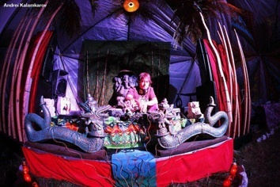
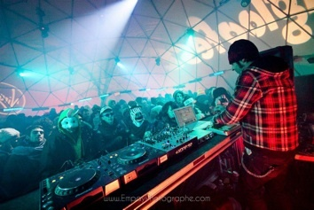
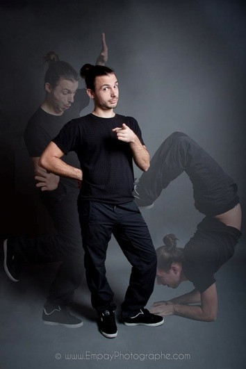
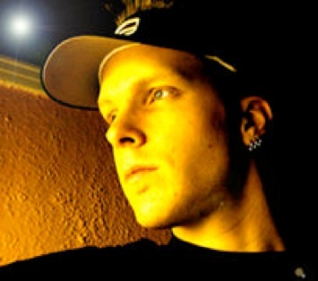
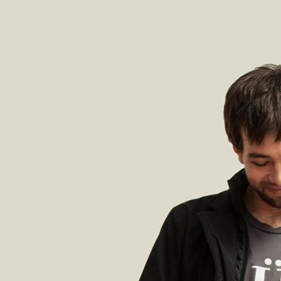
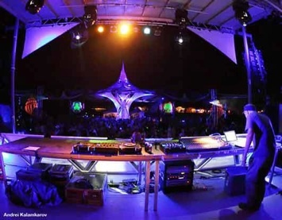
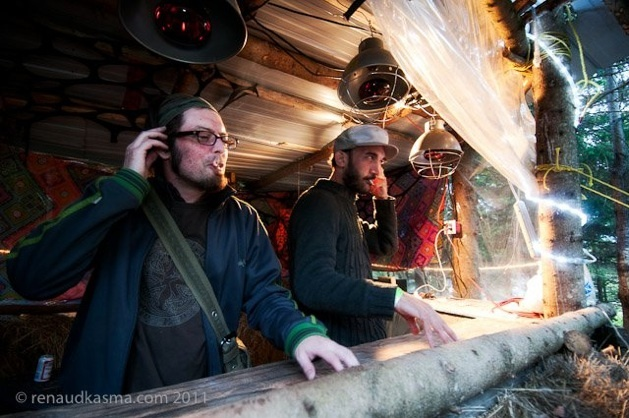

TATANKA NOUS REVIENT EN FORCE EN 2013 POUR SA DEUXIÈME ÉDITION!
LES PRODUCTIONS TEKOUT, SIX FEET HIGH, RELAXATION LOUNGE & LUNE NOIRE PRÉSENTENT
-> TROIS SCÈNES EXTÉRIEURES!
--> PLUS DE 50 DJ'S DE CALIBRE INTERNATIONAL
---> ARTISTES DE LA RUE, ARTISTES DE CIRQUE, VJ'S, DANSEUSES DE BALADI, ATELIERS, JEUX RIGOLOS, CAMPING GRATUIT...
♬ styles de musique diversifiés et éclectiques! ♬
-TECHNO
-PSY/PROG
-ELECTROSWING/BALKAN
-DUBSTEP
-TECHOUSE/ELECTRO
-CHILL/PSYBIENT
-SLAMEURS
-D&B/JUNGLE
-DUB/PSYDUB
-WORLBEAT
-BREAKBEAT
-SCRATCHEURS SUR TABLES TOURNANTES
_____________________________________________________
LIVE-SETS
✔ 1,618 live [Operation Mindfuck Rec.], Montréal (prog tech)
http://soundcloud.com/cosmic-orgasm
✔ BIOBAZAR live, Trois-Rivières (world/trance)
https://www.facebook.com/biobazar

✔ DELICATE FRENESIE live, Montréal (dark psy)
https://soundcloud.com/delicatefrenesie
✔ FLORIAN MSK live [D.M.T.Records], Montréal (minimal techno)
https://soundcloud.com/florian-msk
https://www.facebook.com/FlorianMSK666
https://www.facebook.com/groups/d.m.t.collective

✔ KOLA PAPASS live, Montréal (prog/electroswing)
http://soundcloud.com/kola-papass
✔ LYNXPOINT live [Ghotiithout], Montréal (prog)
http://soundcloud.com/lynxpoint

✔ MASINGULARITY live, Montréal (psy)
http://soundcloud.com/masingularity
✔ MC ULTRA K live, Montréal (trip-hop)
✔ MONOKONGO live, Montréal (prog)
http://soundcloud.com/monokongo

✔ ÜBER live, Montréal (prog/tek)
https://soundcloud.com/ubermuzik

✔ WAVE PARASITES live [Hardtimes Prod], Montréal (techno)
https://soundcloud.com/wave-parasites-1
https://www.facebook.com/pages/Wave-Parasites/356709434339080
✔ XNOROPHIS live, Montréal (electroswing/tribal)
http://soundcloud.com/xnorophis

_____________________________________________________
DJ-SETS
✔ ABSOLUTE, Montréal (psy)
http://www.mixcloud.com/MelAbsolute
http://www.facebook.com/djabsolutepage
✔ AJAXBEATS [konkrete Jungle/NYC Ravers], Brooklin (jungle)
✔ AIKIDO [Fractal], Montréal (chill/prog)
https://www.facebook.com/pages/DJ-Aikido/127462787263960
✔ AKIBEL [Evolove], Montréal (psy)
http://www.mixcloud.com/Anitakibel
https://www.facebook.com/DjAkibel
✔ AKSHOBHYA [Logic Vision Records], Montréal (min/psy)
✔ ARACHNAPHABOB, Québec (psy)
✔ AUDIOPHIL, Val David (psy/tribal)
✔ BENDALA [Space Gathering], Val David (psy/ethno)
✔ BLACK CAT [Hardtimes], Montréal (jungle/tek)
https://soundcloud.com/black-kat
✔ CLECTIC [Les Pirateries], Montréal (eclectic)
✔ D-BRAIN, Montréal (psy)
https://soundcloud.com/alexandre-4/complex-inner-space
✔ DECEPTION [Studio Sundari], Montréal (psy)
✔ DER DENKER [D.M.T. Records/Concepto Hipnotico], Montréal (min)
http://soundcloud.com/derdenker
http://www.mixcloud.com/derdenker
https://www.facebook.com/groups/d.m.t.collective
✔ DEZ1 (Upsessions/Music&friends), Québec (d&b)
✔ DEZZ aka SERENITY vs DUBLDROP [Capital Bass Culture/Drastic Industries/Red One/bassdrop.ca], Montreal (Dubstep)
✔ ED-LINER [3e oeil], Montréal (techno)
http://soundcloud.com/ed-noname
✔ ELIOS, Montréal (chill)
http://www.mixcloud.com/Dj_Elios
✔ EXODE, Montréal (downtempo)
✔ FAT LOUIE [Orgone Nrg Lab], Québec (d&b/trip-hop)
✔ FLOYDIANCHILD [Floydian Prod.], Québec (shamanik dub)
✔ GALAKS [I.D.J./F.A.K], Montréal (techno)
✔ GLITCH [TransitionProductions], Québec (prog/psy)
www.mixcloud.com/maximbeliveau
✔ JAHLEX [Reggae Bash], Montréal/Jamaique (Reggae)
✔ JEFF MK-ULTRA [Natura Festival], Montréal (psy)
✔ HOPEKU [Joof Records/Planet B.E.N. records], Québec (prog)
http://www.mixcloud.com/hopeku
https://www.facebook.com/djhopeku
✔ HORIZON [24/7 Records], Montréal (psy)
https://www.facebook.com/pages/Horizon-247-Records/247720938618024
✔ KARMAPA, Montréal (psy)
✔ KERSTON [Sound In Motion], Québec (dubstep)
https://www.facebook.com/kerstondj
✔ KILURA [Pounjah Familia], Québec (chill)
✔ KURSE, Granby (drum and bass)
✔ LECTRICK AND BUSKER [Scratch Routine], Montréal
✔ LUNARGROOVE [Relaxation Lounge], Montréal (chill)
https://www.facebook.com/LunarGroove
✔ MATTYSEA [Quite Nice], Montréal
(Jungle, Dubstep)
✔ MAX DIRT, Montréal (electro)
http://soundcloud.com/dj-maxdirt
✔ META B [Monkey Dub], Montreal (d&b/dub)
http://soundcloud.com/monkeydub
✔ MOHINIA [Logic Vision Records], Montréal (psy)
http://soundcloud.com/dj-mohinia
✔ MR. LION [Tatanka/6'High/quite nice], Montréal (Stepper dub)
http://soundcloud.com/jahstyle
http://www.mixcloud.com/jahstyle
✔ NISMO [Cyber loft], Montréal (house)
https://www.facebook.com/DJNismoMTL
✔ NITROUS [Monkey Dub/In Da Jungle Recording], Montréal (d&b)
http://www.indajunglerecording.com/
http://soundcloud.com/monkeydub
✔ OBSIDIAN [Logic Vision Records], Ottawa (psydub)
http://www.mixcloud.com/ObsidiaN
http://soundcloud.com/obsidian-4
✔ OKIN, Montréal (tekhouse)
http://soundcloud.com/dj-okin-2nd_floor
✔ 0M SHANT1, Montréal (dubstep)
http://soundcloud.com/0mshant1
http://www.mixcloud.com/0mshant1
✔ PLECKOBWOY [Risk/quite nice/6'High], Montréal (ethno trap, jungle)
http://soundcloud.com/pleckobwoy
✔ PRANAPAPA [Tatanka/Relaxation Lounge], Québec (shamanik trance)
https://www.facebook.com/PranapapaDj
✔ RISA SELECTOR, Sherbrooke (dub)
http://soundcloud.com/alex-dubmex
✔ SABI NON STOP [Tekout/Tatanka/6'High], Montréal (music)
✔ SAMIAM, Montréal (downtempo)
✔ SEMIRA, Montréal (world/electroswing)
http://soundcloud.com/djsemira
https://www.facebook.com/djsemiraw
✔ SEVEN WAYS [TransitionProductions], Québec (prog)
✔ SHANSHANCROFT, Montréal (electro glitch)
✔ SINAÏ, Montréal (chill)
✔ SIPHERDEE [64HRZ], Montréal (dubhouse/d&b)
✔ SNOWPHISH vs LOCKOUT [MTL's Bassix Production], Montréal
(Dub Gareage Deep Dubstep)
✔ SPO_ONANI [Upsessions/Tatanka], Québec (techno/d&b)
http://soundcloud.com/SPO_ONANI
http://www.mixcloud.com/spo_Onani
✔ STALKER aka FORTERESS, Montréal (d&b)
✔ SYMBOLIUM [United Beats Records], Montréal (psy)
http://www.unitedbeatsrecords.com/symbolium.html
https://www.facebook.com/djsymbolium
http://soundcloud.com/symbolium
✔ SYNTHETIK [Prism Code], Ottawa,Montreal (psy)
✔ TRANSURFER [Logic Vision Records], Montréal (psy)
http://soundcloud.com/transurfer
✔ VNFX [F.U.B.A.R./Tekout], Montréal (prog/glitch)
✔ WALLY [Highonbeats.com/Risk], Montréal (bass)
✔ YVY, Sherbrooke (ethno)
https://www.facebook.com/stevbreton http://www.youtube.com/user/plasmatriix
...
Et c'est pas fini !
_____________________________________________________
VISUELS
✔ VJ VIRUS, Levy
✔ VJ SHANSHANCROFT, Montréal
_____________________________________________________
DECO
✔ JO LANDRIX, Montréal
✔ DARSANA LUNA, Montréal
_____________________________________________________
PERFORMANCES, ATELIERS
Les ateliers, les slameurs, les artistes de la rue seront annoncés bientôt!
_____________________________________________________
KIOSQUES
RELAXATION LOUNGE area [Massage Zenergica, chill-out avec tapis, coussins, shishas, ...)
IL Y AURA UN RESTO SUR PLACE!
_____________________________________________________
BILLETS
Mars à 25$ -> uniquement en ligne [sold-out]
Avril à 35$ (jusqu'au 5 mai à St-Jérôme) [sold-out]
Mai à 45$
Juin à 55$
Porte à 70$
POINTS DE VENTE
En ligne [http://eventik.net/]
Montréal [Psychonaut, 154 Prince-Arthur Est, 514 844-8998]
St-Jérôme [Chanvre du Nord, 38 de Martigny Est, 450 565-5305]
(bientôt disponible!)
Montréal [Studio Sundari, 6264 St-Hubert, 514 984-3733]
Québec [Raph SpoOnani, https://www.facebook.com/spo.onani]
Québec [Maxim Glitch, https://www.facebook.com/maxim.beliveau
Sherbrooke [Arbre à Palabre, 147 Wellington Sud, 819 569-8776]
On vous revient avec d'autres surprises!
(Tatanka 2011: http://www.rave.ca/en/event/46022/)
Voir tous les détails sur
